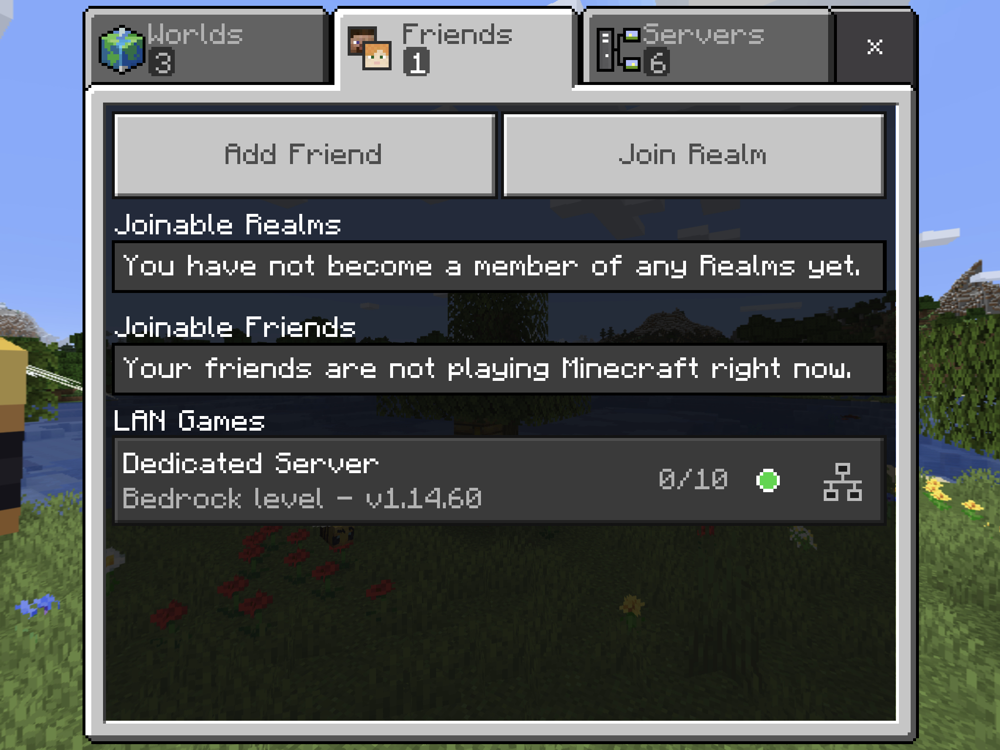

How to Setup Minecraft Bedrock Server in Docker
The minecraft bedrock server is still in the alpha stage, but that won’t stop me using it to serve my game with friends and family. The only problem is I have a mac. Naturally docker comes to the rescue. The Linux version of the bedrock server is tested on Ubuntu 18.04. Since 20.04 just came out, why not give it a try? Let’s create a Dockerfile first.
1 | FROM ubuntu:20.04 |
And then build the image and start a container
1 | $docker build --tag bedrock-1.14 . |
Notice that when running the container, I have to specify IP to be 0.0.0.0 to listen to all IP addresses for this game to show up in the LAN game. You don’t have to specify that if you just want to connect to a customized server over WAN(For WAN to work, you need to configure your router to forward port 19132 UDP). After the game starts, you can attach to the container to run commands as usual.
1 | $docker ps |
To exit the container without killing it, you should not type ctrl+c because it will stop the container. You should type ctrl+p and then ctrl+q to detach from the container. You can customize the detach key by specifying --detach-keys like docker attach --detach-keys "ctrl-a,ctrl-a" 00ac4398cde3, and then you can use your customized detach key in the container.
If you want to directly use the image mentioned above, I have uploaded it to the docker hub. You just need to run following commands1
2$docker volume create bedrock-server-1.14-data
$docker run -d -it -p 0.0.0.0:19132:19132/udp --mount source=bedrock-server-1.14-data,target=/minecraft-server-data ycshao/bedrock-1.14
Cheers and happy minecraft!

Reference:
Official Site